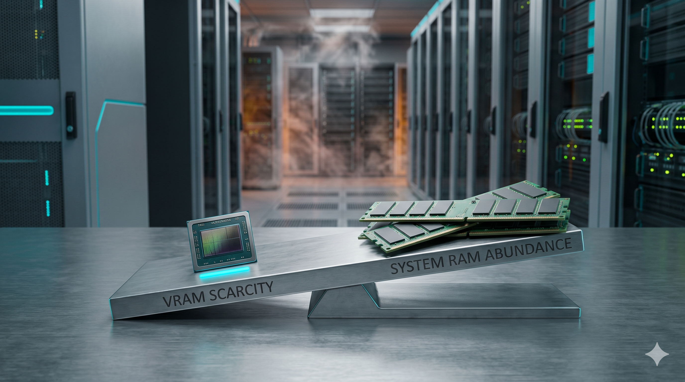

Quando a retórica da nuvem encontra o silício, a RAM e o boleto
Série: O Mito da Eficiência — IA, Silício e a Realidade Além da Nuvem
— 5 artigos | Lançamentos de dezembro de 2026 a janeiro de 2027

Capa da série: o PDV real diante da promessa de nuvem infinita — engenharia de chão de fábrica versus retórica de agentes autônomos.
Esta série continua o fio do Horizonte do Essencial (jun–ago/2026), mas entra no recorte da IA agêntica: agentes que leem planilhas, tokens a quinhentos reais por mês, procedures SQL que a LLM não decifra, PDV em JavaFX que precisa fechar numa tela.
O objetivo não é negar a IA. É auditar o que a retórica esconde — VRAM, janela de contexto, bancos vetoriais, Jevons, sidecar — com evidências de chão de fábrica, não slogans anti-hype repetidos.
Convite: leia na ordem 1 → 5 se quiser o arco completo (do limite físico do hardware até o mapa de sobrevivência). Cada texto também funciona sozinho.
Capa do artigo 1: VRAM, escassez de chips e o imposto do token.
Fecho da série: sidecar em vez de substituição, SLMs locais onde a conta fecha, pgvector no Postgres e entrega em 2D — receita para a segunda-feira, sem reescrever o legado.
Lançamento: 19 de janeiro de 2027
Cronograma: índice 15/12/2026; artigos 22/12, 29/12/2026, 05/01, 12/01 e 19/01/2027.
Nota: Série ensaística com base em diálogo técnico real sobre IA, legado e infraestrutura — evidências e custos, não marketing corporativo.